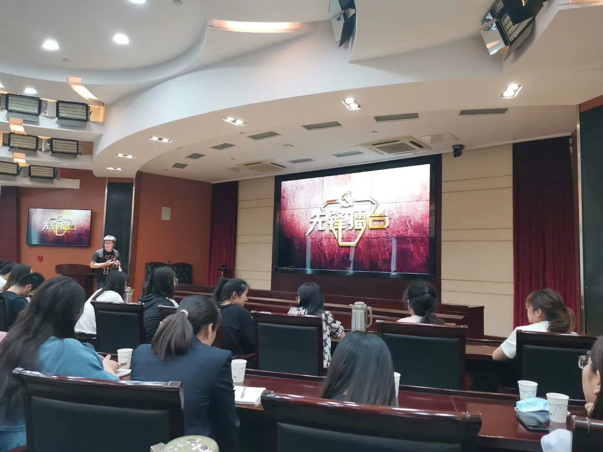

【信息发布时间：2020-06-01阅读次数：】 【我要打印】 【关闭】
为营造浓厚学习氛围，搭建业余时间交流思想、探讨业务的常态化学习成长平台，牢牢把握思想政治引领的主线。
引导广大青年干部争做有理想、有本领、有担当的青年一代，积极投身干事创业热潮。我中心年轻团干部积极参加团市委5月末组织的“青年夜学”活动。
本次“青年夜学”的内容为张家港市先锋实践对话栏目“先锋擂台——青年说”，通过网络直播的形式，吸引我们一起进行话题探讨、观点辨析、思维碰撞，成为港城青年提供促学习、增才干、强本领的新平台。通过一系列形式个各样的学习活动，持续强化思想引领，不断浓厚学习氛围，提升青年干部能力素质。
